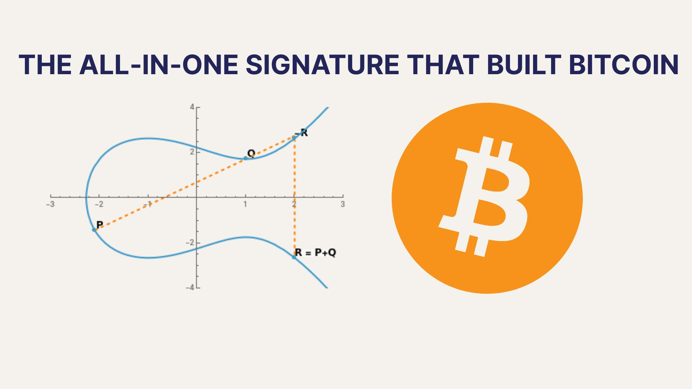

The All‑in‑One Signature That Built Bitcoin and Why It Might Not Survive the Quantum Age
March 18, 2026

The 64 bytes that made Bitcoin possible
Bitcoin's permissionless ownership model depends on a specific kind of cryptography at exactly the right price point.
Elliptic-curve signatures (in Bitcoin’s case, ECDSA over secp256k1) solve three different problems in a single, tiny object: they link a persistent identity to a key, authorize a concrete message, and give every node on the network a small to broadcast and cheap local validity predicate. Who, what, and a yes/no answer, all in 64 bytes. That composition is pure mathematical elegance, but it is also the condition under which a fully decentralized, gossip-based, permissionless system could function at all.
It is easy to miss how crucial this "all-in-one" property is. In principle, identity, authorization, and validity are separate concerns. Identity is about long-lived public keys and how they map to users. Authorization is about intent over specific state transitions. Validity is about whether a proposed transition satisfies global rules. ECDSA makes these distinctions look cosmetic by wrapping them in a single algebraic check: Verify(pk, M, σ) ∈ {0,1}. But even in Bitcoin, this check is only a gate, not the law. A transaction with a valid signature can still be invalid because it double-spends, violates a script, or depends on UTXOs that no longer exist. The real validity predicate is: signature verification plus state transition rules plus consensus.
Historically, earlier digital cash experiments either did not depend on this bundle or outsourced parts of it to a trusted center. Chaumian eCash relied on blind signatures and a bank; the bank was the verifier, so the global validity predicate never had to be encoded into an object that could be checked by anyone. Hashcash, b‑money, and bit gold replaced identity with proof-of-work; "who" collapsed into "whoever burned energy," and authorization was indistinguishable from expenditure. None of these broke out into a durable, permissionless system with global verification at scale. Bitcoin was the first system that insisted on all three at once: reusable pseudonymous identities, public verification, and no trusted verifier. Under those constraints, ECDSA’s compact "all-in-one" design was not a stylistic choice. It was the only configuration that made unlimited decentralization compatible with finite bandwidth.
How ECDSA became the default
Almost every chain that followed inherited this as an unexamined default. The signature became the universal "who-said-what" primitive, and elliptic curves became the ambient assumption: accounts, transactions, smart-contract calls, multisigs, bridges, rollups, privacy chains, and beyond. All of it anchored to the same compact object and the same discrete‑log bargain. What was originally a decisive enabling constraint quietly hardened into legacy.
The cost of this configuration is hidden in the hardness assumption it leans on. ECDSA’s security reduces to the difficulty of the elliptic-curve discrete logarithm problem. The fact that one small signature could carry identity, authorization, and a local validity predicate hinged on the assumption that no realistic adversary could extract private keys from public keys. In 2009, that assumption was reasonable. Quantum computers were a theoretical threat, not a deployment concern. The constraint was not future-proofing against Shor’s algorithm; it was making signature verification cheap enough that thousands of anonymous nodes could participate without coordination.
Post-quantum signature schemes offer us the option to continue using the all-in-one structure, but at a different price point. Lattice-based and hash-based schemes can, preserve the same concept, but the difficulty is that they pay for this with size and bandwidth rather than discrete-log hardness. Kilobyte-scale public keys and signatures do not merely bloat blocks; they shift costs onto validation, propagation, and storage at the network edge. The all-in-one abstraction remains, but its price becomes visible and infrastructural rather than cryptographic.
The post‑quantum default is not set
This raises a question that Bitcoin never had to confront until now. When quantum attacks force us off elliptic curves, should we continue to assume that identity, authorization, and validity must always travel as a fused package? Or should we treat the all-in-one ECC signature as a historically contingent optimization — one that made sense when 64 bytes bought everything and post-quantum safety was not a concern?
For instance, even in Bitcoin, a signature alone never determines validity. A transaction with a correct signature may still be invalid because it uses wrong nonce, violates script conditions, or depends on state that no longer exists. The real validity predicate has always been a composition of cryptographic checks, stateful rules, and consensus. Observing this does not prescribe an alternative, but it does make the assumption that all three must always be compressed into a single object less self-evident.
There is also a political layer hidden in the "just adopt the standard" instinct. Bitcoin standardized itself on a non‑NIST curve, secp256k1, simply by usage. That history matters in the post-quantum transition: if we already live with non‑NIST primitives when they fit our constraints, it is not obvious we should accept the NIST PQC size tax as destiny. NIST is optimizing for broad governmental and industrial deployments, not permissionless blockchains. We can, and should, explore architectures and primitives that are optimal for the actual constraints of decentralized systems.
The history of ECDSA in Bitcoin is therefore not just a story about one elegant scheme winning on technical merit. It is a story about how a particular price vector: small, non-interactive, publicly verifiable signatures under a classical hardness assumption, made a new kind of decentralization physically possible. As that price vector changes, the open question is whether the same abstraction remains inevitable, or whether it was an artifact of a specific moment in cryptographic history.
Disclaimer: This content is for informational purposes only and is not investment, legal, or financial advice. Any views expressed are our own.
What is EternaX Labs: EternaX is a post-quantum-safe blockchain for money and markets, purpose-built for #stablecoins, tokenized cash, RWAs, tokenized assets, and high-velocity on-chain trading. The core thesis is simple: the next winning financial rails will not just be fast, cheap, or private. They will need to be post-quantum safe at the authorization, settlement, and privacy layers at the same time. Wedge 1- At the core of EternaX is a protocol-native novel post-quantum authorization scheme with 160-byte signatures, low-single-digit overhead, and ~120 ms spendable finality. The scheme paper is available on arXiv. The point is not just stronger cryptography. It is preserving market speed, execution quality, and usable liquidity while upgrading the full authorization, settlement, and privacy perimeter to the post-quantum threat model. EternaX is being designed to avoid the usual post-quantum tradeoff where signature bloat becomes a permanent tax on throughput, fees, and routing quality. Wedge 2 - EternaX’s second core advantage is post-quantum-safe auditable privacy: hidden balances, hidden transaction details, hidden order intent, and selective disclosure with verifiable controls. That matters because privacy that can be broken later is not durable privacy. EternaX’s view is that auditable privacy itself must be post-quantum safe from day one, so confidentiality does not depend on cryptographic assumptions that may later fail. In other words, EternaX is not just aiming to make assets post-quantum safe. It is aiming to make authorization, settlement, and auditable privacy post-quantum safe together. For stablecoin issuers, RWA issuers, and tokenized-asset platforms, the value proposition is direct: issue PQ-native assets on day one, avoid future perimeter migration and liquidity-fracture risk, and scale on rails built for speed, continuity, and durable privacy. For investors, EternaX is a bet on the next category of blockchain infrastructure: post-quantum-safe issuance, post-quantum-safe settlement, and post-quantum-safe auditable privacy as core primitives for institutional-grade on-chain finance.For more details, contact info@eternax.ai.